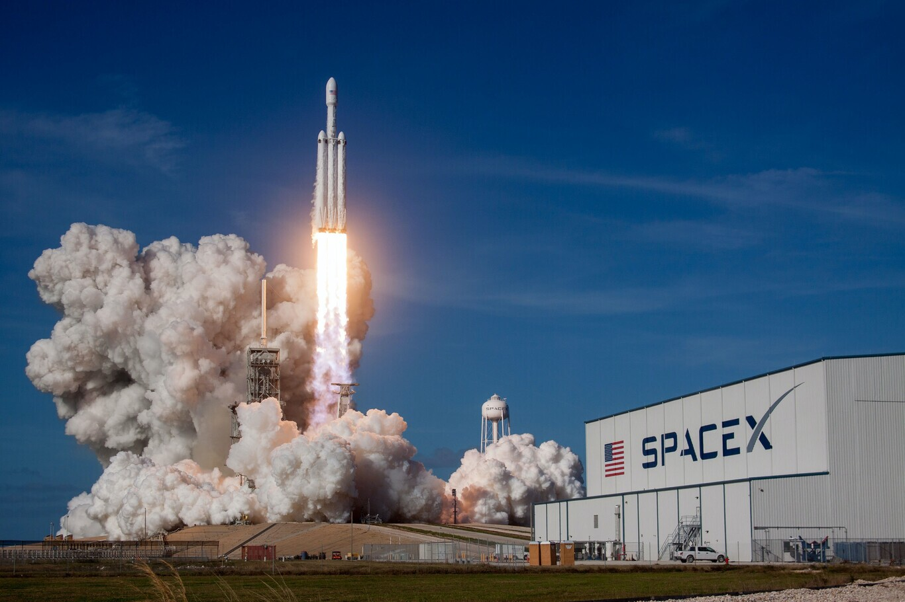

Space Exploration Technologies Corporation, mejor conocida como SpaceX, es una empresa aeroespacial estadounidense cuyo principal objetivo es reducir los costes de acceso al espacio para permitirle a la humanidad llegar a Marte. Fue fundada en 2002 por Elon Musk, con sede en California, Estados Unidos. pero sus principales plataformas de lanzamiento orbital son: la estacion de la fuerza aerea de naño cañaveral, el centro espacial jhon f kennedy y la base de la fuerza aerea vandenberg y esta construyendo una cuarta plataforma en Brownsville texas
Space X

El último lanzamiento de SpaceX fue el 15 de mayo de 2025, según información disponible en la web. Consistió en el lanzamiento de un Falcon 9 desde Florida, que llevó 28 satélites Starlink a órbita, contribuyendo a la expansión de la constelación de internet satelital de SpaceX. Además, se menciona que este fue el 400º lanzamiento de un Falcon 9 con un booster reutilizado, el cual aterrizó exitosamente en la plataforma "Of Course I Still Love You" en el océan